חיפוש ותצוגה
- לחפש כמה ראשיות ומשניות בהתאם למהדורה.
- לדרג ממצאים ולפתוח אותם בטבלה.
- לנווט בתורה בחצים, במקלדת ובגלגלת.
- לשנות צבעים, להציג קווים ולנהל מילים בצופן.

עיון מונחה
כלי עזר מסודר למאגר שמות, תאריכים, מאורעות ותכונות חיוביות. מתאים לעיון זהיר בלבד, בלי הכרעה על אנשים ובלי לשון הרע.
גמ"ח קהילתי
טופס למסיעים ולמבקשי נסיעה חד־פעמית או יומיומית, עם בדיקה אם המבקש נמצא במסלול המסיע ובהפרדה בין גברים לנשים. ההתאמה היא ראשונית בלבד ועוברת דרך אחראי גמ"ח.
שירות אישי
מי שמבקש עבודת חיפוש אישית יכול להזמין חיפוש צופן חדש לפי נושא, לפחות 10 מילים חשובות ושאלה מנחה. השימוש הרגיל באתר נשאר פתוח לציבור.
התוכנה בדפדפן
גל עיני Web כוללת חיפוש ראשיות ומשניות, טבלת ממצאים, תצוגת תורה מימין לשמאל, ניווט אופקי ואנכי, צבעים, קווים ופתיחת קובצי צופן. השימוש באתר פתוח כעת כולל ספרייה, גיבוי, היסטוריה, ייצוא והדפסה.
דוגמאות אמיתיות מתוך התוכנה.
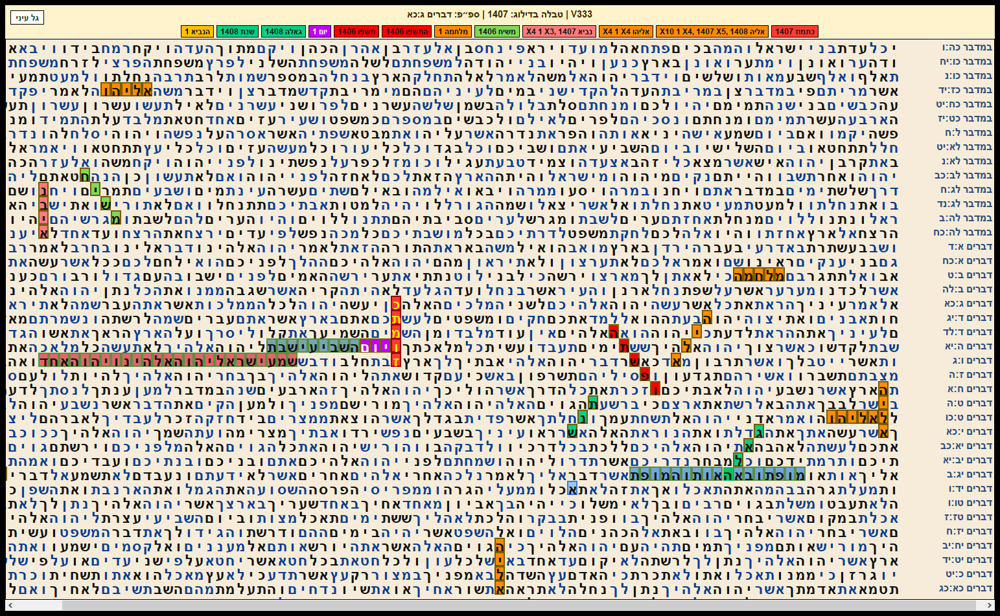
כתמוז 1407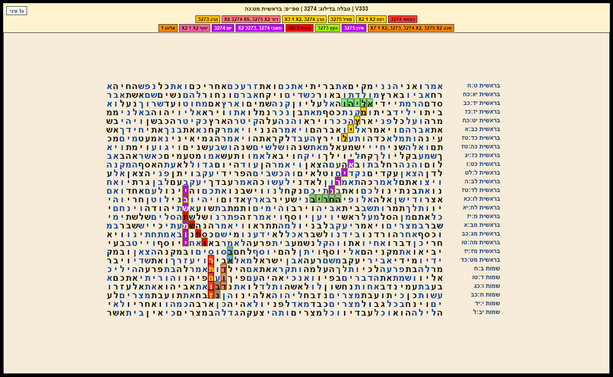
כתמוז תשפו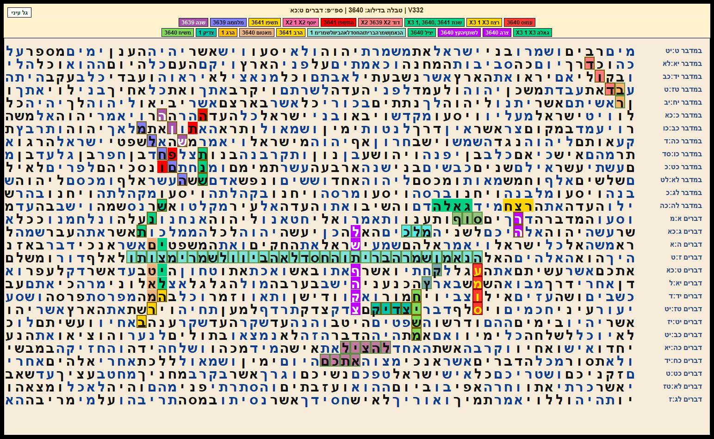
הרב עמוס התשפו מלחמה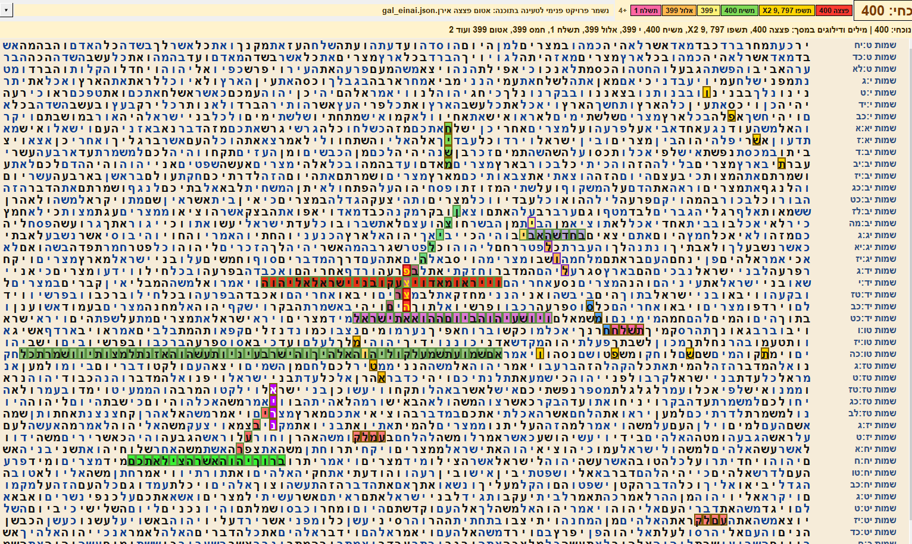
אטום פצצה אירן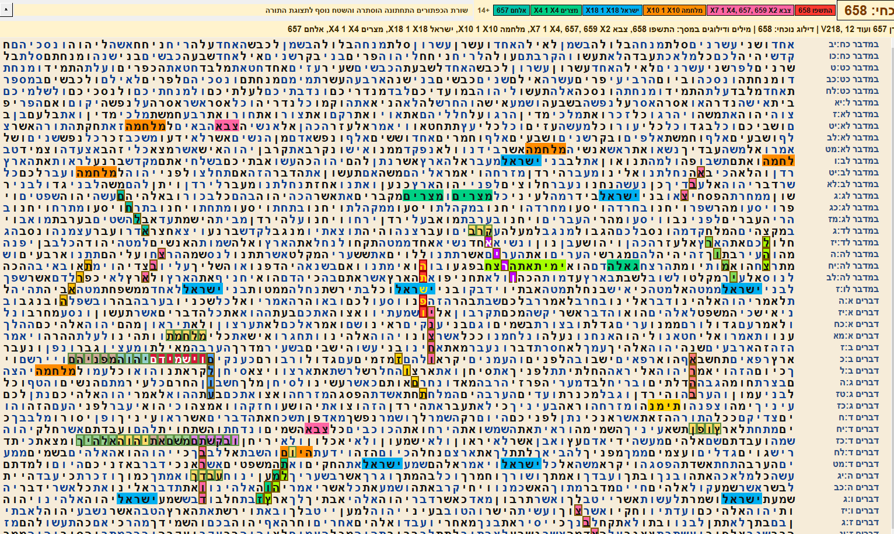
ותמוז התשפו ינצחו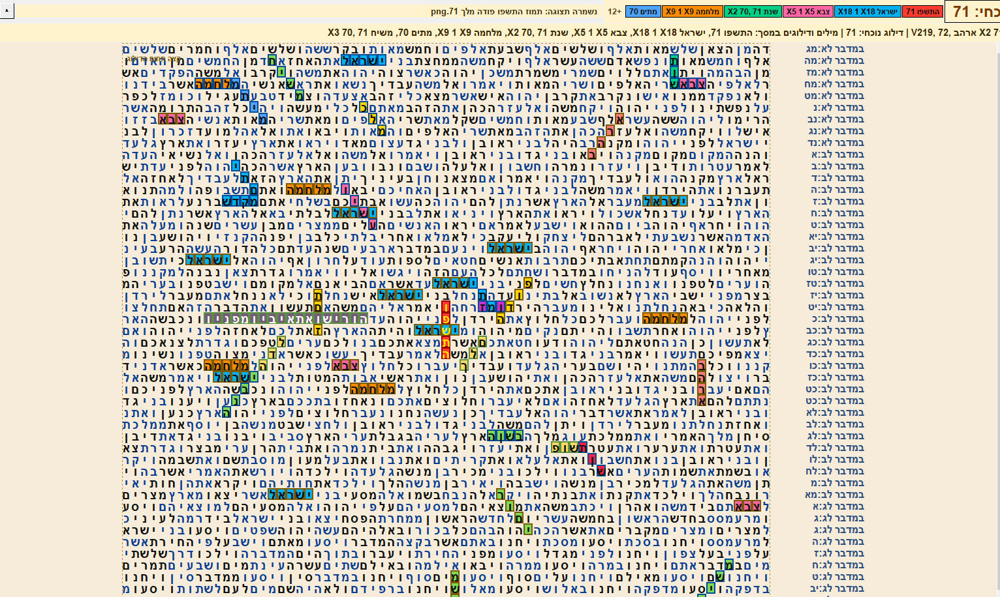
תמוז התשפו פודה מלך 71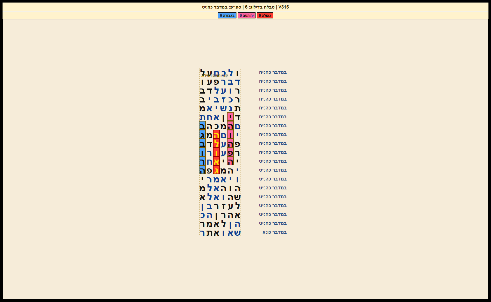
גאולה מ ה-פה בגבורה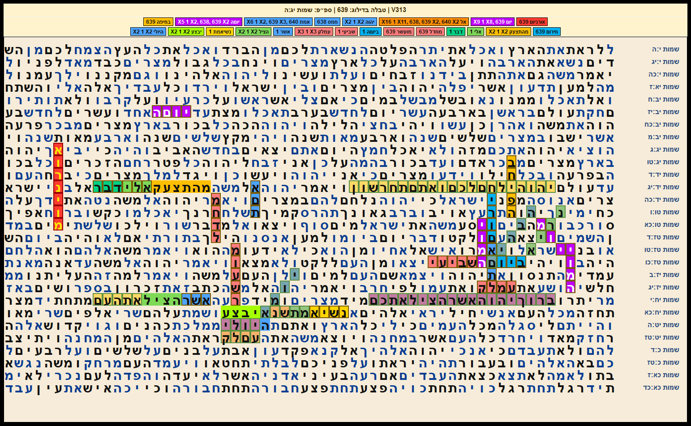
ה יולי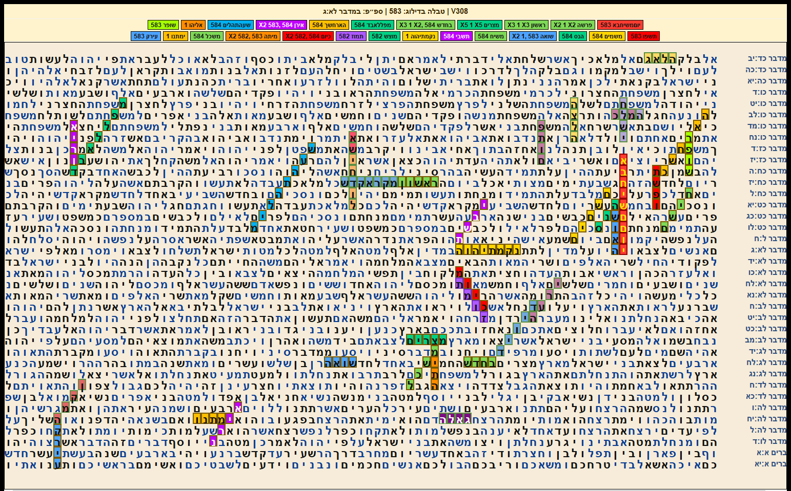
יום משיח בא 583 כתמוז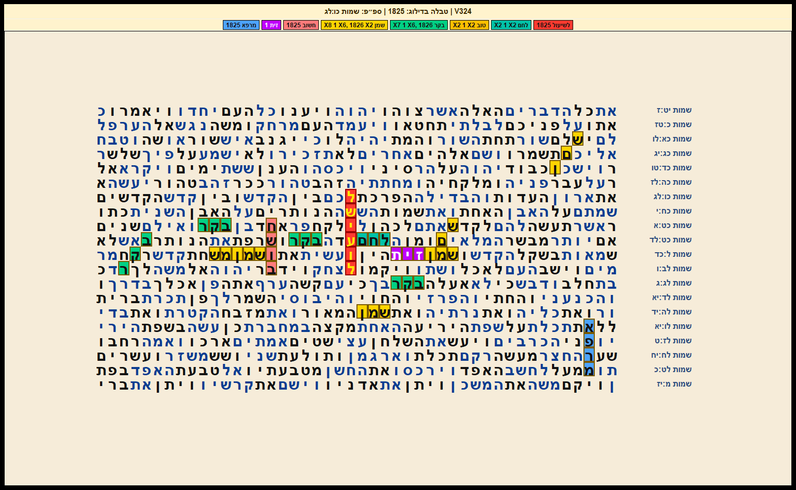
לשיעול שמן זית ולחם בקר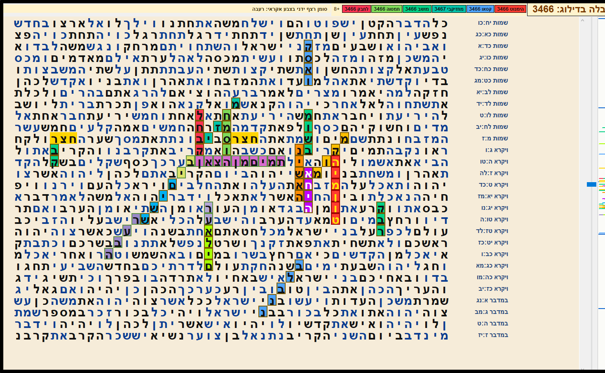
הימנוט קסאוגרסת Windows מיועדת לעבודה המקומית המלאה. הקובץ פועל אצלך במחשב, ללא צורך בהרשמה וללא תלות באתר פעיל.
האתר כולל כיום חיפוש, תצוגה, שמירת צפנים, גיבוי, היסטוריה, הדפסה, ייצוא ודף דוגמאות. השלבים הבאים יתמקדו בחשבונות משתמש, גיבוי בענן ועבודה רציפה בין מחשב לנייד.
הכיוון הוא אתר שמתחיל מהפעולות הבסיסיות, ונבנה בהדרגה לכלי עבודה.